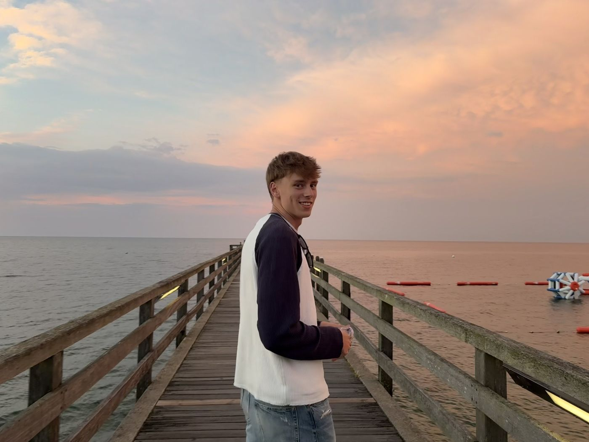
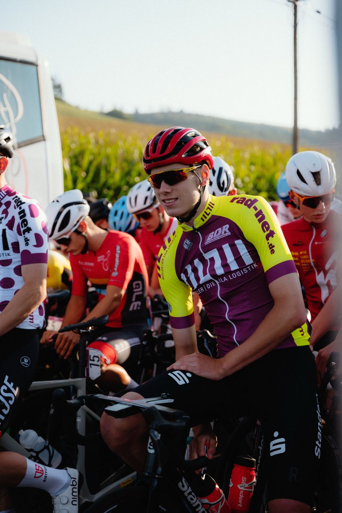
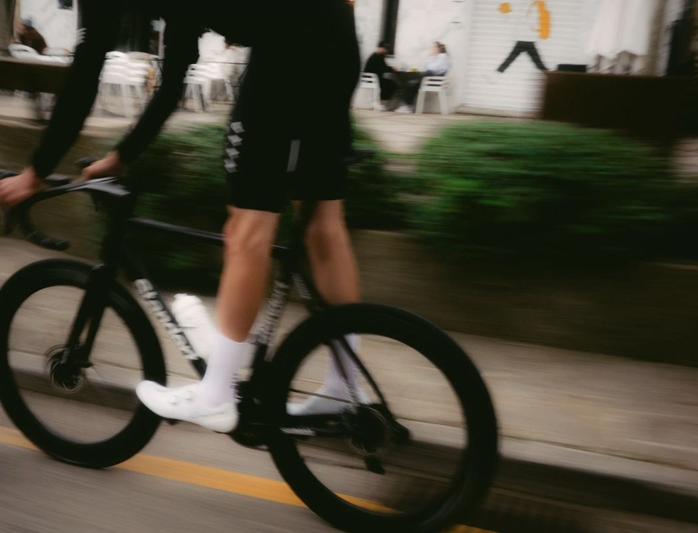

Bewusst mit Geld umgehen
Ich will wissen, wo mein Geld hingeht – nicht knausrig, sondern mit Plan.
Hey, schön dass du da bist 👋
21, aus Meck-Pomm, zu Hause in Cottbus, mitten in der Erzieherausbildung – und bis vor Kurzem noch ziemlich schnell auf dem Rad unterwegs.
Lass uns quatschen
Ursprünglich komme ich aus Mecklenburg-Vorpommern. 2019 habe ich meine Sachen gepackt und bin an die Sportschule gewechselt – ich wollte einfach das Bestmögliche aus meinem Sport herausholen. Training, Schule, Wettkämpfe: Das war ab da mein Alltag. 2025 habe ich dort mein Abitur gemacht.
Heute wohne ich in Cottbus und bin im 2. Lehrjahr meiner Erzieherausbildung am DEB Cottbus. Mit Kindern und Jugendlichen zu arbeiten fühlt sich für mich richtig an – vielleicht auch, weil ich selbst so lange in Teams unterwegs war und weiß, wie viel gute Begleitung ausmacht.
Neun Jahre lang drehte sich bei mir alles um den Radsport. Inzwischen habe ich ein neues Kapitel aufgeschlagen, aber eins ist geblieben: Ich mag es, an Dingen dranzubleiben und mich Schritt für Schritt zu verbessern.

Von 2016 bis 2025 war ich Leistungsradsportler. Hier die Stationen, auf die ich besonders stolz bin:
Einstieg in den Leistungsradsport – ab da gab's kaum noch ein Wochenende ohne Training oder Rennen.
Sechs deutsche Meistertitel in den Nachwuchskategorien.
Silber bei der WM in Kolumbien in der 4000-m-Mannschaftsverfolgung – mein größter Moment auf dem Rad.
Die komplette Saison gewonnen – und obendrauf noch das Sprint-Trikot.
Abschied vom Leistungssport. Die Erfahrungen nehme ich mit – in die Ausbildung und alles, was kommt.

Ich will wissen, wo mein Geld hingeht – nicht knausrig, sondern mit Plan.
Ich probiere viel aus und will verstehen, wie ich KI sinnvoll im Alltag nutzen kann.
Geduld zahlt sich aus – im Sport wie beim Investieren. Ich denke in Jahren, nicht in Tagen.
Egal ob Radsport, Ausbildung, Geld oder KI – ich freu mich über jede Nachricht.